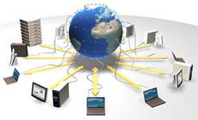

Una red de computadoras, también llamada red de ordenadores, red de comunicaciones de datos o red informática, es un conjunto de equipos informáticos y software conectados entre sí por medio de dispositivos físicos que envían y reciben impulsos eléctricos, ondas electromagnéticas o cualquier otro medio para el transporte de datos, con la finalidad de compartir información, recursos y ofrecer servicios.
Como en todo proceso de comunicación se requiere de un emisor, un mensaje, un medio y un receptor. La finalidad principal para la creación de una red de computadoras es compartir los recursos y la información en la distancia, asegurar la confiabilidad y la disponibilidad de la información, aumentar la velocidad de transmisión de los datos y reducir el costo general de estas acciones. Un ejemplo es Internet, la cual es una gran red de millones de computadoras ubicadas en distintos puntos del planeta interconectadas básicamente para compartir información y recursos.
El primer indicio de redes de comunicación fue de tecnología telefónica y telegráfica. En 1940 se transmitieron datos desde la Universidad de Darmouth, en Nuevo Hampshire, a Nueva York. A finales de la década de 1960 y en los posteriores 70 fueron creadas las minicomputadoras. En 1976, Apple introduce el Apple I, uno de los primeros ordenadores personales. En 1981, IBM introduce su primer PC. A mitad de la década de 1980 los PC comienzan a usar los módems para compartir archivos con otros ordenadores, en un rango de velocidades que comenzó en 1200 bps y llegó a los 56 kbps (comunicación punto a punto o dial-up), cuando empezaron a ser sustituidos por sistema de mayor velocidad, especialmente ADSL.